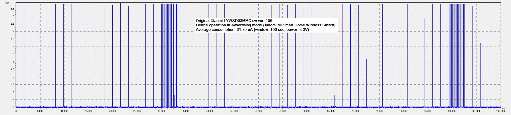
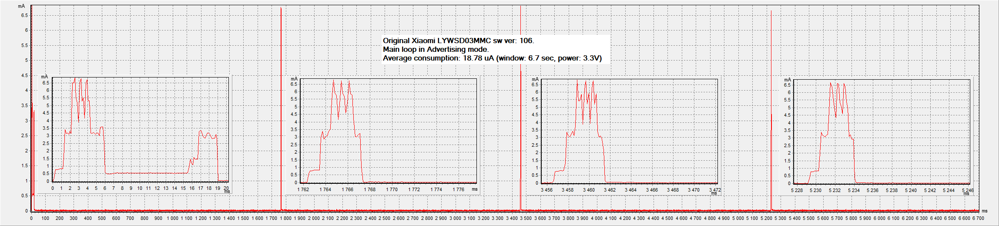
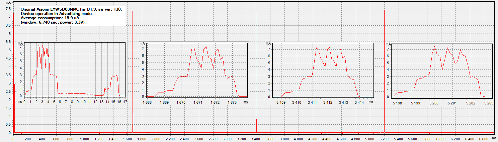
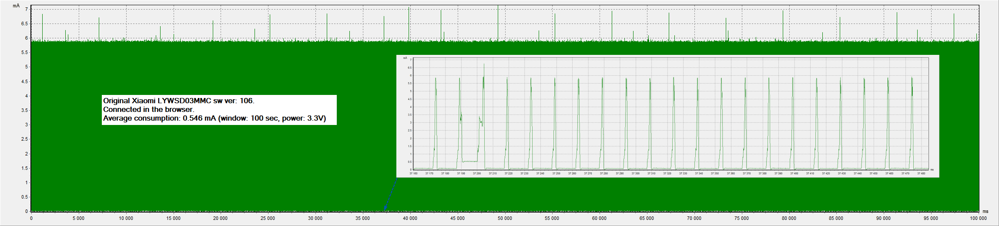
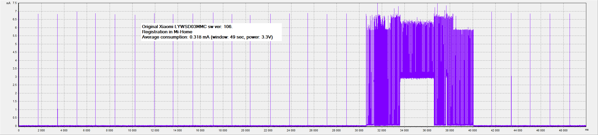
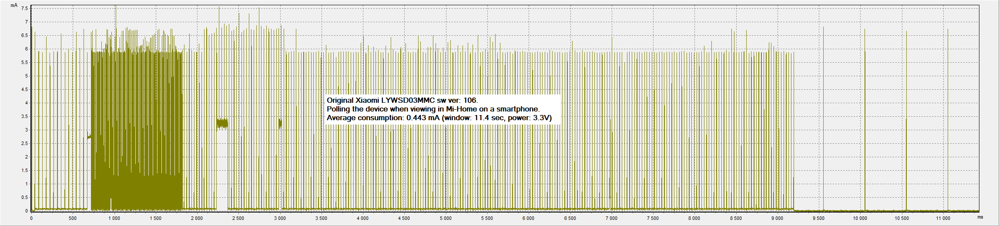
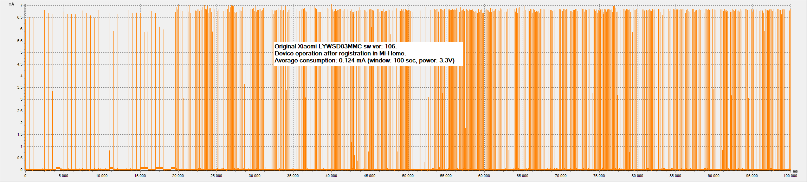

Average power consumption of Original Xiaomi LYWSD03MMC.
Device operation in Advertising mode (Xiaomi Mi Smart Home Wireless Switch):

Original Xiaomi LYWSD03MMC HW:B1.4, sw ver: 106.
Smartphone BT Off!
Average consumption: 31.75 uA (window: 100 sec, power: 3.3V)
RF TX Power: +0 dbm ?
Main loop in Advertising mode (B1.4):

Original Xiaomi LYWSD03MMC HW:B1.4, sw ver: 106.
Smartphone BT Off!
Average consumption: 18.78 uA (window: 6.7 sec, power: 3.3V)
RF TX Power: +0 dbm ?
Main loop in Advertising mode (B1.9):

Original Xiaomi LYWSD03MMC HW:B1.9, sw ver: 130.
Average consumption: 18.9 uA (window: 6.74 sec, power: 3.3V)
RF TX Power: +0 dbm
On browser connection mode:

Original Xiaomi LYWSD03MMC HW:B1.4, sw ver: 106.
Average consumption: 0.546 mA (window: 100 sec, power: 3.3V)
RF TX Power: +0 dbm ?
Registration in Mi-Home:

Original Xiaomi LYWSD03MMC HW:B1.4, sw ver: 106.
Average consumption: 0.318 mA (window: 49 sec, power: 3.3V)
RF TX Power: +0 dbm ?
Polling the device when viewing in Mi-Home on a smartphone:

Original Xiaomi LYWSD03MMC HW:B1.4, sw ver: 106.
Average consumption: 0.443 mA (window: 11.4 sec, power: 3.3V)
RF TX Power: +0 dbm ?
Device operation after registration in Mi-Home (Smartphone BT On):

Original Xiaomi LYWSD03MMC HW:B1.4, sw ver: 106.
Average consumption: 0.124 mA (window: 100 sec, power: 3.3V)
RF TX Power: +0 dbm ?